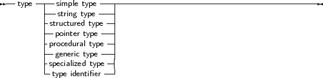

All variables have a type. Free Pascal supports the same basic types as Turbo Pascal, with some extra types from Delphi. The programmer can declare his own types, which is in essence defining an identifier that can be used to denote this custom type when declaring variables further in the source code.
_________________________________________________________________________________________________________Type declaration
___________________________________________________________________
There are 7 major type classes :
_________________________________________________________________________________________________________Types

___________________________________________________________________
The last case, type identifier, is just a means to give another name to a type. This presents a way to make types platform independent, by only using these types, and then defining these types for each platform individually. The programmer that uses these units doesn’t have to worry about type size: it is opaque to him. It also allows to use shortcut names for fully qualified type names. e.g. define system.longint as Olongint and then redefine longint.